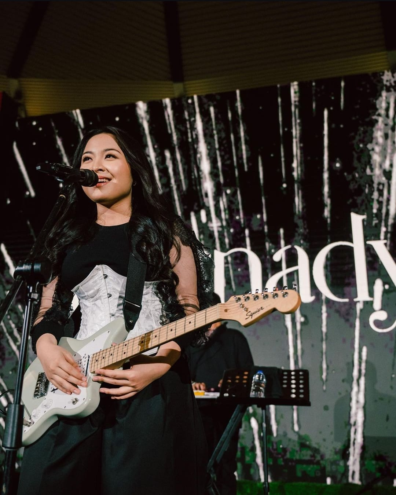

Gallery


11.000 kilometer kutempuh sendirian
bawa pelukku yang ternyata tak kaurindukan
36.000 kaki di atas laut kutahan
kau tahu benar ku takut ketinggian
Ingin sempurna di matamu
Hanya itu yang aku mau
Namun tampaknya sempurna tak cukup
Bila ternyata aku bukan yang kauperlu
Bernadya Ribka Jayakusuma (lahir 16 Maret 2004) merupakan penyanyi-penulis lagu asal Indonesia. Ia memulai karier bermusik pada 2016 dengan menjadi peserta The Voice Kids Indonesia musim pertama bergabung dalam tim Tulus. Bernadya kemudian menjalankan karier sebagai solois di bawah naungan perusahaan rekaman Juni Records pada 2022 dan merilis singel solo debutnya berjudul "Apa Mungkin" yang menjadi hit di media sosial dan membawanya dinominasikan sebagai Pendatang Baru Terbaik dalam Anugerah Musik Indonesia 2023.
Bernadya merupakan penyanyi perempuan dengan lagu terbanyak di tangga lagu Indonesia Songs yang disusun oleh Billboard dalam satu pekan secara bersamaan yakni sebanyak 7 lagu pekan 24 Agustus 2024.[6] Di platform Spotify, ia memecahkan dua rekor pada hari yang sama sebagai artis yang paling banyak didengarkan dalam sehari di Indonesia serta albumnya Sialnya, Hidup Harus Tetap Berjalan menjadi album yang paling banyak didengarkan dalam sehari di Indonesia.